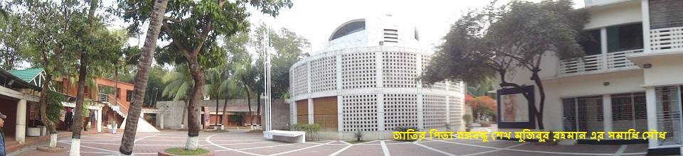
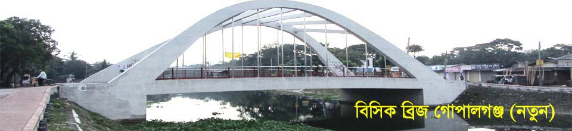
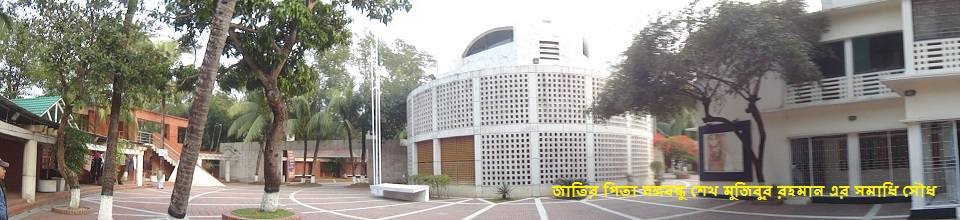
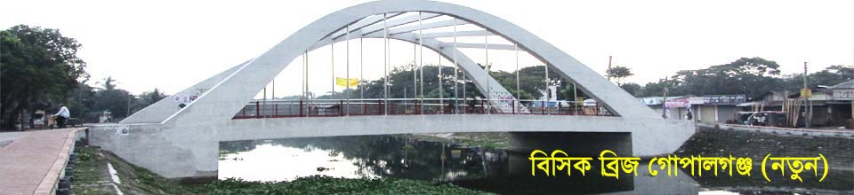

Liberation War: Bangabondhu Sheikh Mujibur Rahman who hailed from the district declared independence of Bangladesh. Hemaet Uddin, leader of Hemaet Bahini, is known for his gallantry contribution in the Liberation War of 1971. The very first protest of the Liberation War occurred at the . 5 members of the Police who participated in the first protest of the Liberation War at Razarbag Police Line are the sons of this district. Martyrs of the war included Professor Santosh Das, Abdul Latif, Golzar Hossen Chowdhury, Mahbubur Rahman and many others. Guerilla Training Camps took place in Bangabandhu Govt. School field, Hijlabari school field. Guerilla training and battles took place after Steamer of Major Ghouri entered Gopalganj from Khulna on 30 April. Gopalganj was not part of any sector as it was far from border areas. As a result, three forces took command of the operations namely Hemayet Bahini (Force), Mujib Bahini (Force) and Mukti Bahini (Liberation Force) under the command of Captain Hemayet Uddin Bir Bikram, Ismat Kadir and Lutfor Rahman respectively. Apart from these many members of the Army, EPR and other forces like Captain Halim, Captain Milu, Captain Shihabuddin, Captain Jamal and Abdur Rahman led other forces in their villages.
Politics: Gopalganj is associated with significant importance in Bangladesh politics. The district is the political
bastion of the Awami League. Bangabandhu Sheikh Mujibur Rahman, the Father of the Nation and the first President of Bangladesh, hailed from the village
of Tungipara in the district and began his political career in the said district. Her Excellency Sheikh Hasina Wajed, the current Prime Minister of
Bangladesh also hails from the same district. Sheikh Fazlul Haq Mani, his nephew, had also been elected to Parliament from Gopalganj-2 constituency.
Unfortunately both Rahman and his nephew were assassinated on 15 August 1975.
Rahman's daughter, has been elected 4 times as the Member of the Parliament (MP) from Gopalganj-3 (Kotalipara and Tungipara) constituency and
thrice as the Prime Minister of Bangladesh. Her cousin and Sheikh Mani's brother, Sheikh Fazlul Karim Selim has been elected 4 times as the MP from
Gopalganj-2 constituency.
Molla Jalal, Choudhury Emdadul Hoq, Khan Saheb, Sheikh Mosharrof Hossain and Advocate Khandaker Mahbub Uddin were among other popular political
leaders of this area.
Transportation: Gopalganj has a great transportation system. It is a 5 hours drive away from the capital Dhaka by road subject to traffic conditions. The journey time is set to reduce once the Padma Multipurpose Bridge is opened for all. Dhaka-Khulna Highway goes through Gopalganj to connect the neighbouring districts namely Barisal, Narail, Faridpur, Madaripur, Bagerhat and Khulna. Buses leaves Dhaka for Gopalganj from both Gabtoli and Syedabad. Tungipara Express, Modhumoti, Dola, Bonoful leaves from Sayedabad for Gopalganj via Munshiganj - Mawa - Kawrakandi - Madaripur and Comfort Line, Sheba Green, Polash leaves from Gabtoli for Gopalganj via Manikgonj - Paturia - Doulotdia - Rajbari - Faridpur.
Water transportation was the main medium of transport for the people of this district in the 1980s but the popularity of it has declined over time with the introduction of road connectivity. Now a launch operates between Sadarghat of Dhaka and Poisharhat of Kotalipara. However, mechanical trawlers and boats still ply through the rivers, canals and vast water bodies.
An inoperable rail line is in place till Kashiani. The train service is also set to be reintroduced after the Padma Bridge is built.
On 14 April 1986, at least 92 people were killed in Gopalganj by the heaviest hailstones ever recorded, which were the size of grapefruits and weighed around 1 kg (2.2 lb) each.